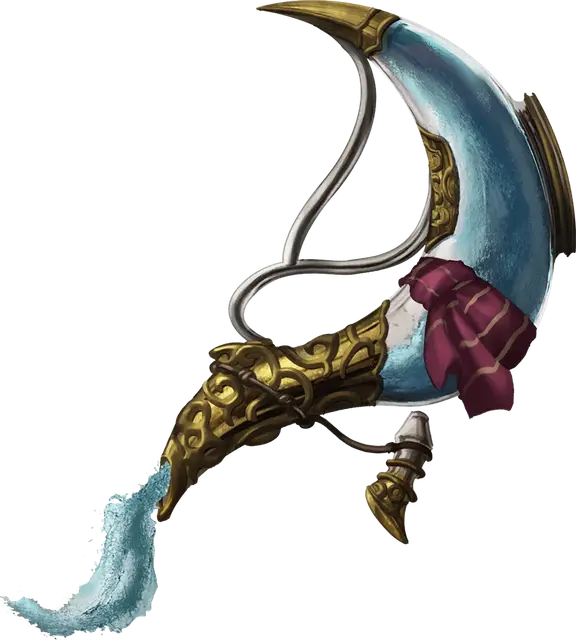

Графин бесконечной воды
Decanter of Endless Water
Чудесный предмет, необычный

Рекомендованная стоимость 101-500 зм
Эта закупоренная ёмкость булькает, если её потрясти, как будто в ней находится вода. Весит графин 2 фунта.
Вы можете действием откупорить графин и произнести одно из трёх ключевых слов, после чего из графина выливается указанное количество пресной или солёной воды (на ваш выбор). Вода прекращает литься в начале вашего следующего хода. У вас есть следующие варианты:
- «Ручей» производит 1 галлон (4 литра) воды.
- «Фонтан» производит 5 галлонов (19 литров) воды.
- «Гейзер» производит 30 галлонов (114 литров) воды, которая вырывается струёй 30 футов длиной и 1 фут шириной. Держа графин, вы можете бонусным действием нацелиться графином на существо, которое видите в пределах 30 футов от себя. Цель должна преуспеть в спасброске Силы Сл 13, иначе получит 1к4 дробящего урона и будет сбита с ног. Вместо существа вы можете нацелиться на предмет, который никто не несёт и не носит, и который весит не больше 200 фунтов. Предмет или падает или толкается на 15 футов от вас.